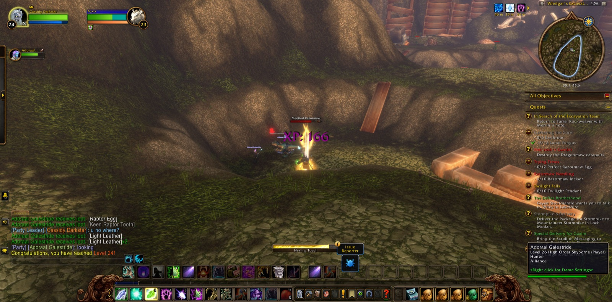
Cassidy Darkstar went out from the Deepwater Tavern in Menethil Harbor. He passed by Bluegill Marsh and Sundown Marsh and The Green Belt, and came at last to Whelgar's Excavation Site. There he set Merrin's note before Tarrel Rockweaver and took up "Ormer's Revenge" and "Uncovering the Past". He went among the diggings and found what had been lost: the Golm Fragment, the Modr Fragment, the Ados Fragment and at last the Neru Fragment. The Mottled Razormaws and Scytheclaws, the Raptors and the Screechers fell before him by the score, and more than once he saw Ormer's errand through and took it up again. In the midst of that labour he came into his twenty-fourth level, and a picture was taken to mark it. He fell more than once among the diggings, as those who walk that road sometimes do, and went on. He slew the Goaz Warder and took the Titanic Keystone. He slew Sarltooth and carried away its talon. Beneath Ironbeard's Tomb, among the Black Ooze, he found Sida's Bag.
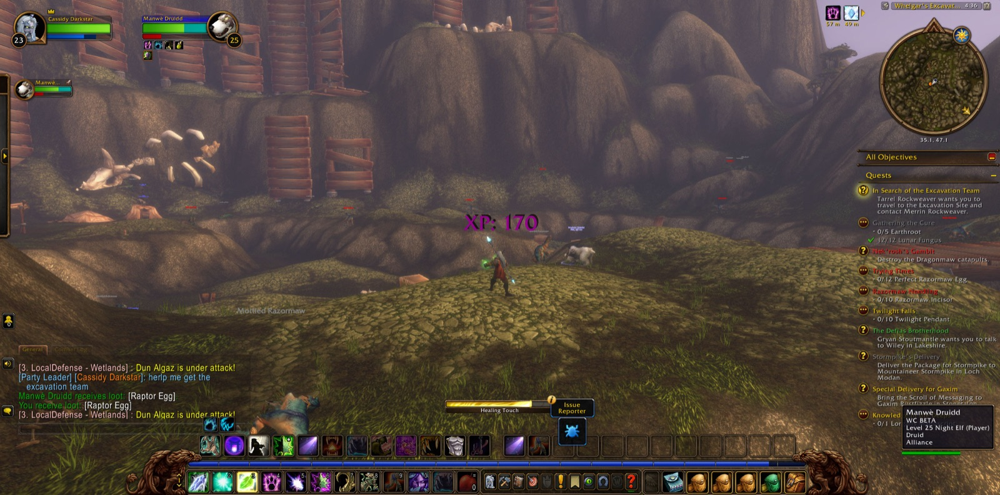
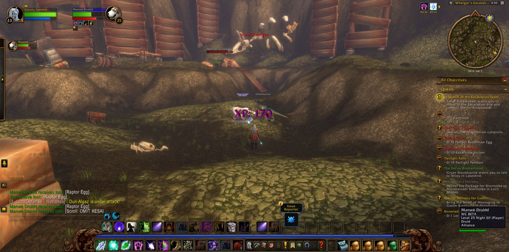
Many came and went beside him in that place. Manwè and Jesaal, both druids, walked with him only a little way. Adoraal the hunter stood by him when his new strength came. Natcho, Lanfair and Nawan shared short stretches of the hunt. Gurney, another druid, kept company with him longer, and Annastasia the mage was with him for much of the work. Rambleon the hunter joined him at the excavation and travelled further with him than any other, over sea and mountain, until they parted at Stendel's Pond in Westfall.
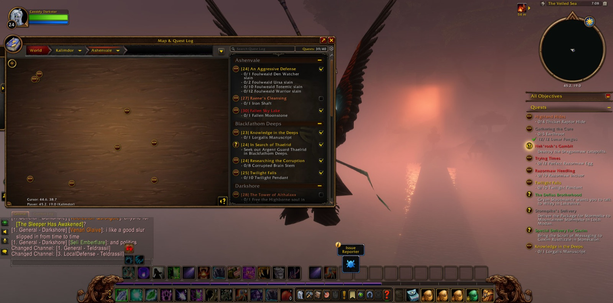
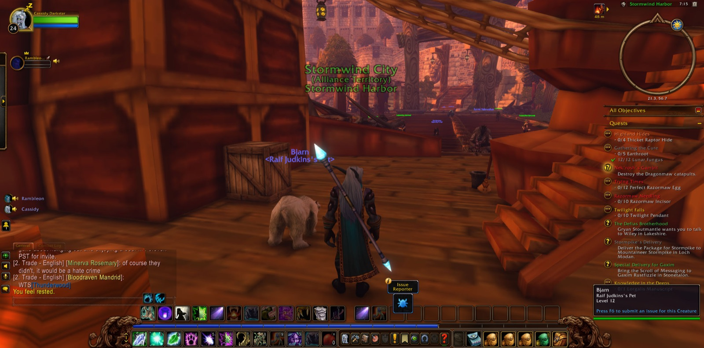
Back in Menethil Harbor he made his report of the excavation team and of the ooze, and took up "Highland Hides" and "Lost in the Thicket Things". Then he went to Nighthaven in Moonglade and by Lake Elune'ara. From there he passed into Darkshore, through the Ruins of Mathystra and Mist's Edge, to Rut'theran Village and to Auberdine. He crossed The Veiled Sea to Stormwind Harbor. In Stormwind Keep he took the Menethil Statuette to Lord Grayson Shadowbreaker in the Cathedral of Light, who sent him on to "The Shamed Lieutenant". In the Mage Quarter he gave over "A Donation of Wool". Then he went down into the Stormwind Stockade to quell the uprising, with the hunters Uncle and Artemis and, for a short while, Cdna the warrior. Defias Captives, Convicts and Prisoners fell there.
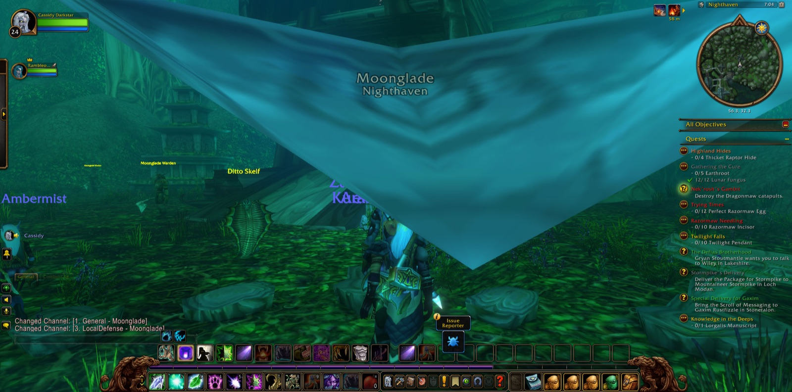
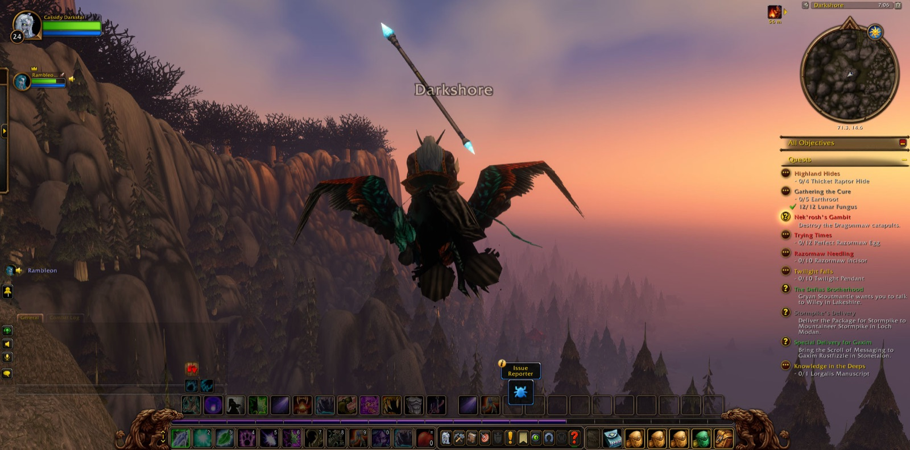
After that the road ran long. He went by the Deeprun Tram to Ironforge and the Hall of Explorers, and out through the Gates of Ironforge into Dun Morogh. From there he passed through Searing Gorge, the Altar of Storms and Draco'dar in the Burning Steppes, through Northshire Valley and Mirror Lake in Elwynn Forest, and so into Westfall. Between Moonbrook, Demont's Place and Alexston Farmstead he gathered Goretusk Snouts and Stringy Vulture Meat for "Westfall Stew", and took gyrostabilizers and isosprings from the harvesters. At The Molsen Farm he put down fifteen Defias Smugglers and fifteen Defias Trappers for "The People's Militia". He gave his report at Sentinel Tower and took on that duty again. At Saldean's Farm the stew and the harvesters were finished and "Goretusk Liver Pie" was begun. Last of all he went south again past Stendel's Pond and came into Moonbrook, and the road still lay open before him.
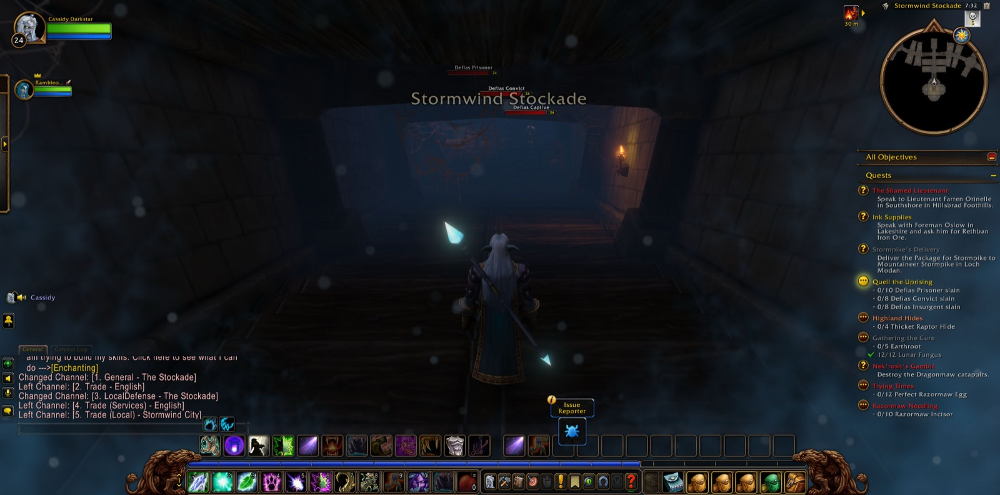
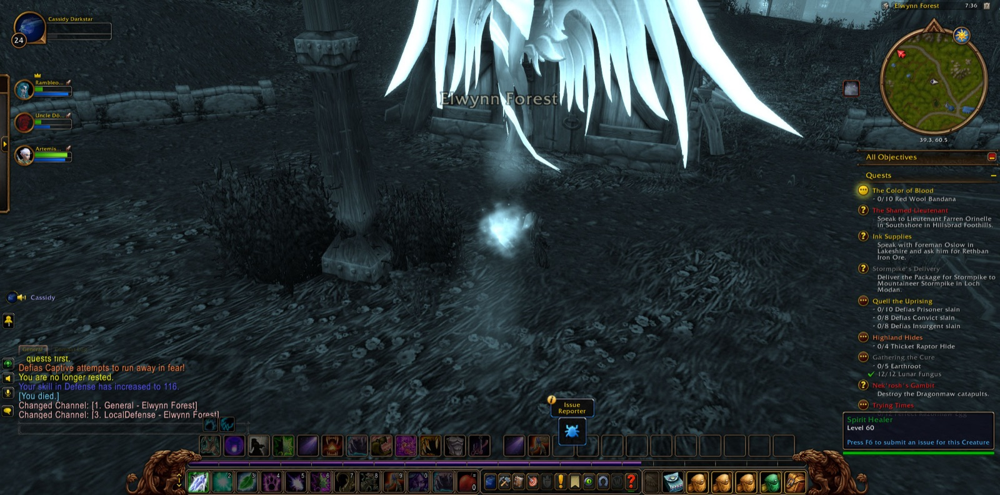
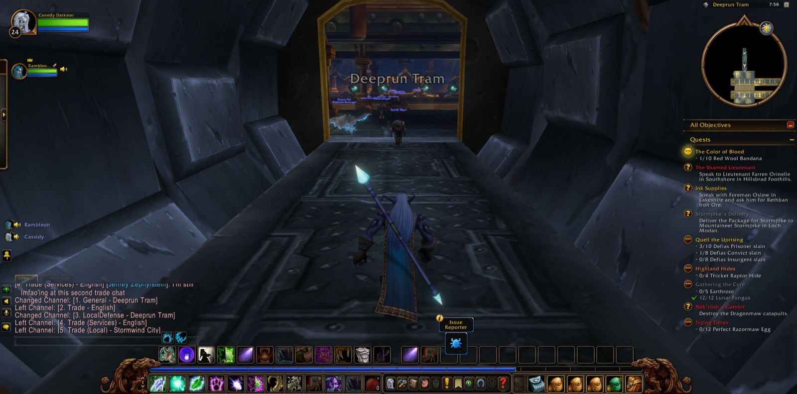
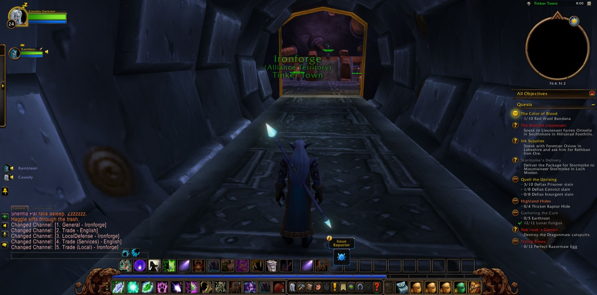
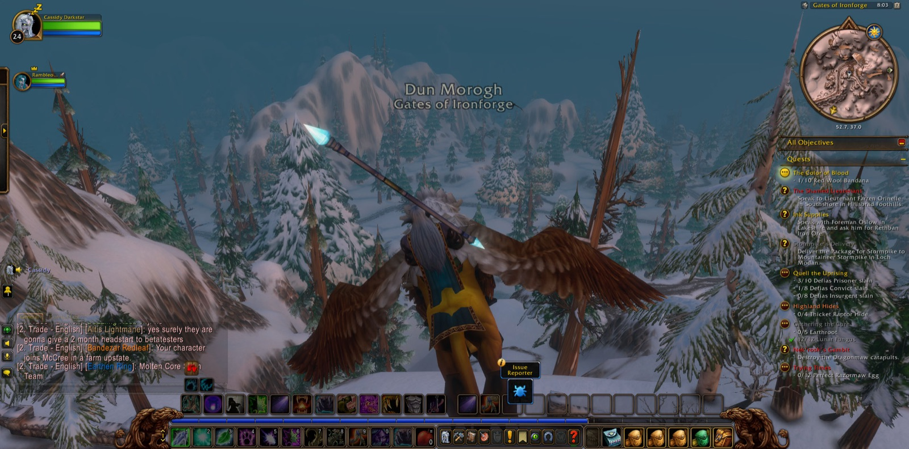
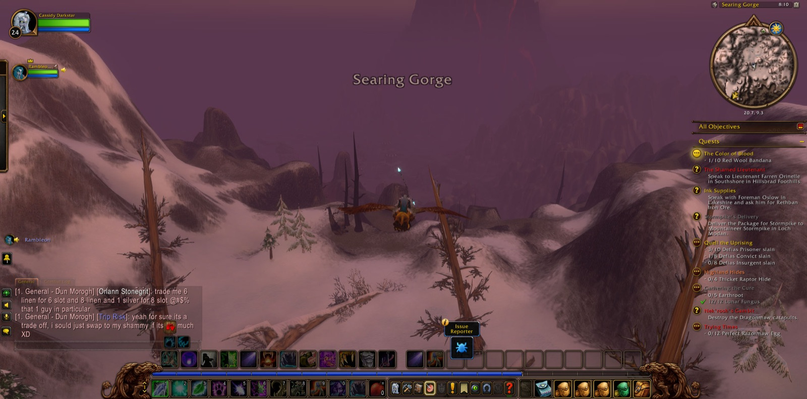
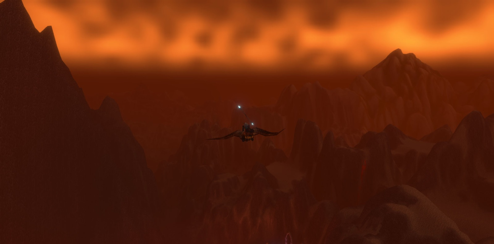
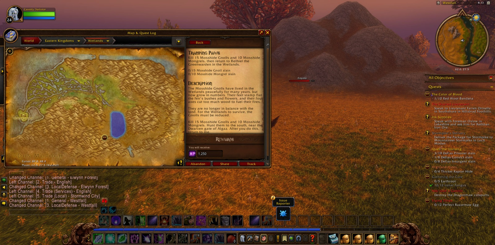